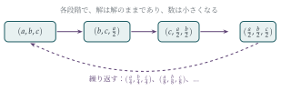

STEP III 2022、第2問
先に進む前に問題を読んでおこう。問題は、OCRが配布している2022年のSTEP問題一式（zipファイル）のSTEP IIIに収録されている： www.ocr.org.uk/Images/696587-2022-past-papers.zip
導入
ある方程式が整数解をもたないことは、どうすれば証明できるだろうか。すべての可能性を試すことはできない。候補は無限にあるからである。1630年代、フェルマー（Fermat）はその方法を見つけた。解が存在すれば、そこからより小さい数でできた別の解が得られ、さらにそこからもっと小さい解が得られ、これが果てしなく続くことを示すのである。しかし、正の整数がいつまでも小さくなり続けることはできない。したがって、そもそも解は存在しなかったことになる。
フェルマーはこれを無限降下法（method of infinite descent）と呼び、大いに誇りにしていた。これは第 1.3 節で扱った整列原理（well-ordering principle）の裏返しであり、方程式が解をもたないことを証明するための主要な道具の一つとして今も使われている。
取りかかる前に
四つの小問はすべて同じ形をしている。解があると仮定し、それを小さくし、矛盾（contradiction）を導く。問題は、どうやって小さくするかである。
小問 (i) の \(a^3 + 2b^3 + 4c^3 = 0\) を見てみよう。三つの項のうち二つは明らかに偶数（even）である。このことから残りの一つについて何がわかるか。
このような観察こそ、あらゆる降下法の出発点である。ある種の整除性（divisibility）が否応なく課されるのである。
順を追って解く
段階 1 最初の降下
\(a^3 = -2b^3 - 4c^3\) であるから \(a^3\) は偶数であり、したがって \(a\) は偶数である（奇数の3乗は奇数だからである）。\(a = 2p\) とおく。すると \(|p| = |a|/2 < |a|\) であり、代入すると \[8p^3 + 2b^3 + 4c^3 = 0 \quad\Longrightarrow\quad 4p^3 + b^3 + 2c^3 = 0.\] となる。
新しい方程式は \(4p^3 + b^3 + 2c^3 = 0\) である。係数は同じで、並びが巡回しただけである。同じ手法をもう一度使えるだろうか。
今度は \(b^3 = -4p^3 - 2c^3\) が偶数であるから、\(|q| < |b|\) を満たす \(q\) を用いて \(b = 2q\) と書け、\(2\) で割ると \(2p^3 + 4q^3 + c^3 = 0\) を得る。もう一度、\(c\) は偶数でなければならない。\(|r| < |c|\) を満たす \(r\) を用いて \(c = 2r\) と書き、\(2\) で割ると \[p^3 + 2q^3 + 4r^3 = 0.\] となる。これは \(a\)、\(b\)、\(c\) の代わりに \(p\)、\(q\)、\(r\) を入れたもとの方程式である。それぞれの大きさは半分になっており、しかもどれも \(0\) ではない。\(0\) でない数を半分にしても \(0\) にはならないからである。
これを、\(0\) でない解が存在しないことの証明にまとめよ。正確には、何が「最小」であると仮定すべきだろうか。
\(0\) でない整数からなるすべての解の中から、\(|a|\) ができるだけ小さいものを一つ選ぶ（解が一つでも存在すれば、整列原理によってこれが可能である）。上の議論により、\(|p| < |a|\) を満たす \(0\) でない別の解が得られ、最小性（minimality）に矛盾する。よって、\(0\) でない解は存在しない。■
同じことを次のように言い換えることもできる。一つの解から、\(|a| > |p| > \cdots\) となる解の無限列を作ることができる。これは正の整数からなる狭義単調減少の無限列であり、そのようなものは存在しない。
段階 2 別の素数
\(9a^3 + 10b^3 + 6c^3 = 0\) では、偶奇性（parity）は明らかには役に立たない。係数 \(9\)、\(10\)、\(6\) を見よう。そのうち二つを割り切る素数はどれか。
素数 \(3\) は \(9\) と \(6\) を割り切るので、\(3\) は \(10b^3\) を割り切り、したがって \(3\) は \(b\) を割り切る。\(b = 3q\) とおいて \(3\) で割ると \[3a^3 + 90q^3 + 2c^3 = 0.\] となる。今度は \(3\) が \(2c^3\) を割り切るので \(c = 3r\) と書け、再び \(3\) で割ると \(a^3 + 30q^3 + 18r^3 = 0\) を得る。よって \(3\) は \(a\) を割り切る。\(a = 3p\) とおき、もう一度 \(3\) で割ると \[9p^3 + 10q^3 + 6r^3 = 0.\] となる。これはまさにもとの方程式であり、数はより小さく、しかも \(0\) でない。同じ降下の議論により、\(0\) でない解は存在しない。■
段階 3 3 を法とする平方数
すべての整数は \(3n\)、\(3n+1\)、\(3n-1\) のいずれかの形をしている。それらの平方は、\(3\) を法として（modulo）いくつになるか。
\((3n \pm 1)^2 = 9n^2 \pm 6n + 1 = 3(3n^2 \pm 2n) + 1\) であり、これは \(3\) の倍数より \(1\) 大きい。また \((3n)^2\) は \(3\) の倍数である。したがって、平方数を \(3\) で割った余りは \(0\) または \(1\) であり、\(2\) になることは決してない。
ここで \(a^2 + b^2\) が \(3\) の倍数であるとすると、余りの組合せは \(0+0\)、\(0+1\)、\(1+0\)、\(1+1\) であり、それぞれ \(0\)、\(1\)、\(1\)、\(2\) となる。\(3\) の倍数になるのは最初の場合だけなので、\(a\) と \(b\) はともに \(3\) の倍数でなければならない。
\(a^2 + b^2 = 3c^2\) かつ \(a = 3p\)、\(b = 3q\) のとき、\(c\) について何が言えるか。
\(9p^2 + 9q^2 = 3c^2\) となるので、\(c^2 = 3(p^2 + q^2)\) は \(3\) の倍数であり、したがって \(c = 3r\) と書ける。すると \(9p^2 + 9q^2 = 27r^2\) より \(p^2 + q^2 = 3r^2\) となる。同じ方程式で、数はより小さい。ここでも降下法が使える。■
段階 4 ひとひねり：方程式が変わる
\(a^2 + b^2 + c^2 = 4abc\) では、右辺は \(4\) の倍数である。\(4\) を法とする平方数はどうなるか。
偶数の平方は \(4\) の倍数であり、奇数の平方は \(4\) の倍数より \(1\) 大きい（\((2n+1)^2 = 4n^2 + 4n + 1\)）。したがって \(a^2 + b^2 + c^2\) を \(4\) で割った余りは、\(a\)、\(b\)、\(c\) のうち奇数がいくつあるかに応じて \(0\)、\(1\)、\(2\)、\(3\) のいずれかとなる。右辺は \(4\) の倍数であるから、奇数のものは一つもあってはならない。\(a = 2p\)、\(b = 2q\)、\(c = 2r\) とおくと \[4(p^2 + q^2 + r^2) = 32\,pqr \quad\Longrightarrow\quad p^2 + q^2 + r^2 = 8\,pqr.\] となる。
これはもとと同じ方程式ではない。\(4\) が \(8\) になっている。それでも降下法はうまくいくだろうか。
ここでの工夫は、より強い主張を証明することである。次の形の方程式をすべて考える。 \[x^2 + y^2 + z^2 = 2^m\, xyz \qquad\text{ただし } m \geq 2.\] このような \(m\) ならどれでも右辺は \(4\) の倍数であるから、まったく同じ議論によって \(x\)、\(y\)、\(z\) はすべて偶数であることがわかる。それらを半分にすると \(2^{m+1}\) の方程式の解が得られ、これもまたこの形をしている。こうして、\(m\) の方程式の \(0\) でない解から、\(m+1\) の方程式のより小さい \(0\) でない解が得られる。この族に属するどの方程式の解でもよいので、その中で \(|x|\) が最小のものをとれば矛盾が生じる。特に、\(a^2 + b^2 + c^2 = 4abc\) は \(0\) でない解をもたない。■
証明したい主張がそれ自身の帰納法（induction）を支えるには弱すぎることがあり、その場合の処方箋は、それ自身を支えられるより一般的な主張を証明することである。これは大学で驚くほどよく使われる手法である。

振り返り
降下法には整除性の源が必要である。毎回、すべての変数を割り切らざるを得ない素数 \(p\)（ここでは \(2\) または \(3\)）を見つけ、それで割った。
それを見つけるには \(n\) を法として考えればよい。\(2\)、\(3\)、\(4\) を法とする余りを調べることで、「何かうまくいくものはあるか」という問いが、短い有限個の確認に変わった。
方程式が変わるなら、一般化せよ。小問 (iv) では、降下の操作で閉じた方程式の族全体が必要であった。
背後にある数学
フェルマーは無限降下法を用いて、\(x^4 + y^4 = z^2\) が正の整数解をもたないことを証明した。これは有名な「最終定理」（Last Theorem）のうち彼が証明を残した唯一の場合であり、\(x^n + y^n = z^n\) の \(n = 4\) の場合を解決するものである。のちにオイラー（Euler）が \(n = 3\) の場合に降下法を用いた（その証明には欠陥があったが、後に補われた）。降下法は今でも現代の理論の出発点である。第 1.9 節に出てくるような曲線に関するモーデル–ヴェイユの定理（Mordell–Weil theorem）の証明は、高度に洗練された降下法なのである。
局所的障害
この節の証明はどれも、ある数を法とする余りを調べることで成り立っていた。ある \(n\) について方程式が \(n\) を法として解をもたないか、あるいは実数解をもたなければ、整数解ももたないことは確かである。このような理由を局所的障害（local obstructions）といい、大学では、\(p, p^2, p^3, \ldots\) を法とするすべての余りを一度に調べる方法である \(p\) 進数（\(p\)-adic numbers）に出会うことになる。
ハッセ（Hasse）とミンコフスキー（Minkowski）による見事な定理によれば、\(a^2 + b^2 = 3c^2\) のような二次方程式については、局所的障害が唯一の障害である。すなわち、解をもたない「局所的」な理由がなければ、実際に有理数解が存在する。三次方程式では、これは劇的に破綻する。1951年、セルマー（Ernst Selmer）は \[3x^3 + 4y^3 + 5z^3 = 0\] が任意の整数を法として解をもち、実数解ももつにもかかわらず、\(0\) でない整数解をもたないことを示した。「局所から大域へ」の原理（local-to-global principle）がいつ、なぜ破綻するのかを解明することは、現代の整数論の大きなテーマの一つである。
解をもつ方程式
小問 (iv) には有名な親類がある。\(x^2 + y^2 + z^2 = 3xyz\)、すなわちマルコフ方程式（Markov equation）である。この方程式は正の整数解を無限に多くもち、\((1,1,1)\)、\((1,1,2)\)、\((1,2,5)\)、\((1,5,13)\)、\((2,5,29)\) と続く。そしてこれらの解は、無理数が分数によってどれほどよく近似できるかという問題と結びついている。演習 4 を参照せよ。
思考のスキル
方程式が解をもたないことを示すには、任意の解から真に小さい解が得られることを示せばよい。そうすれば、最小の解は存在し得ない。
これを、\(n\) を法として考えて降下を推し進める整除性を見つける方法と組み合わせよう。また、主張が降下の操作で保たれない場合には、それを一般化する用意をしておこう。
次の一歩
STEP I の準備運動。（STEP I 2010 問題 8）\(a^3 + 3b^3 = 9c^3\) の整数解は \(a = b = c = 0\) のみであることを示せ。次に、一の位の数字を考えることにより、\(p^4 + 2q^4 = 5r^4\) についても同じことを示せ。
降下を必要としない法。\(4\) を法として考えるだけで、\(x^2 + y^2 = 4z + 3\) が整数解を一つももたないことを示せ。
有理点。小問 (iii) を用いて、円 \(x^2 + y^2 = 3\) 上には有理数座標をもつ点（有理点、rational point）が存在しないことを示せ（\((1,1)\) を含む \(x^2 + y^2 = 2\) と対比せよ）。
マルコフの三つ組。\((x, y, z)\) が \(x^2 + y^2 + z^2 = 3xyz\) を満たすならば、\((x, y, 3xy - z)\) もこれを満たすことを示せ。\((1,1,1)\) から出発して、上に挙げた三つ組を生成せよ（この「跳躍」の手法は降下法の逆である）。
さらに学ぶために
Harold Davenport, The Higher Arithmetic（『数論の高みへ』）、第 2 章および第 5 章。
Joseph Silverman, A Friendly Introduction to Number Theory（Pearson）（『やさしい数論入門』）。非常に読みやすい。\(x^4 + y^4 = z^2\) に対するフェルマーの降下法による証明も載っている。
Simon Singh, Fermat’s Last Theorem（Fourth Estate）（『フェルマーの最終定理』）。フェルマーの余白の書き込みからワイルズ（Wiles）の証明に至るまでの物語を、一般の読者向けに描いている。